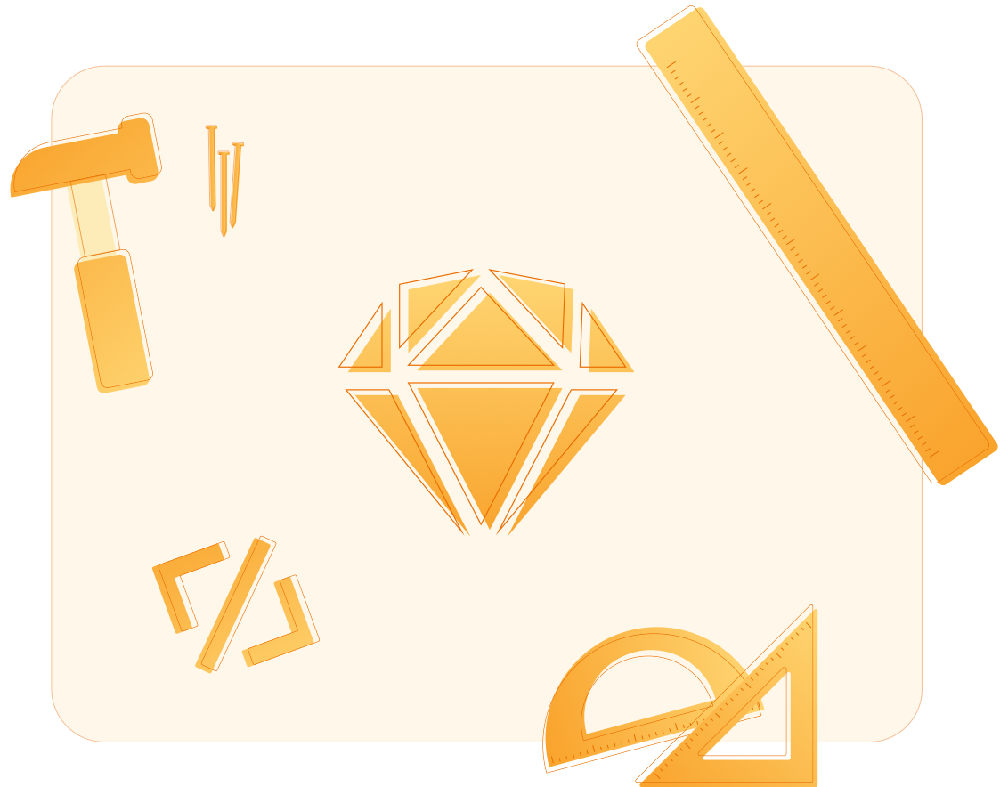

Sketch’s Weak Points
Product Research

Sketch is my faviourite software, by far. Not just for design but for everything. Your only skill cap is your
creativity. I wanted to do an essay on the weak points of Sketch. Points that if addressed can increase
adoption, revenue and user satisfaction. I’m fully aware that my understanding of Sketch will not always be
currect and given my limited time in the industry, things in here might not be applicable or excepted but I’m
determine to help the product I love the most.
I chose to tackle the following subjects.
I chose to tackle the following subjects.
Your only skill cap is your creativity.
Introduction
Sketch’s Vision: How a great vision can help user acquisition.
Sketch’s Untapped Market: Expanding Sketch’s market size.
Sketch’s Adoption Tree: The 6 phases of adoption.
Sketch’s Marketing Plan: A $0 budget approach to marketing.
Sketch’s Untapped Market: Expanding Sketch’s market size.
Sketch’s Adoption Tree: The 6 phases of adoption.
Sketch’s Marketing Plan: A $0 budget approach to marketing.
Download Case PDF

A great vision is a vision worth following.
From the words of Simon Sinek, “Infinite companies play the infinite game.” Infinite statement should reflect
Sketch’s promise to its users that it will forever be part of a person’s ability to self express.
I believe that by changing the vision statement or at least communicate differrent visions for different
people, Sketch can keep growing and expanding to new people, new professions and new generations, after all,
your only skill cap is your creativity.
Sketch’s Vision
“To Empower People Self Expression”: Meant to be atimeless vision.
“Designing A New Way Of Thinking”: For events and so on…
“Everyone Can Be A Great Designer With Sketch”: For user aquisition.
“Designing A New Way Of Thinking”: For events and so on…
“Everyone Can Be A Great Designer With Sketch”: For user aquisition.
“Your Self Expression Starts Here”: For the artists among us.
“Effortless Perfection”: For designers and visual artists.
“Clean Design, Clean Code”: For the developers.
“Effortless Perfection”: For designers and visual artists.
“Clean Design, Clean Code”: For the developers.
“To make the best possible tool for designers.” That a great vision, its truly is.
But Sketch never specified which designers. UI? UX? Web? Animation? Graphic? Motion? Interior? I don’t know what is the best tool because my requirements are deifferent to those who work in Graphics. I feel like the vision works well for the Sketch team and investors but it doesn’t make people stop what they’re doing and try Sketch for the first time.
But Sketch never specified which designers. UI? UX? Web? Animation? Graphic? Motion? Interior? I don’t know what is the best tool because my requirements are deifferent to those who work in Graphics. I feel like the vision works well for the Sketch team and investors but it doesn’t make people stop what they’re doing and try Sketch for the first time.
On the other hand, imagine Sketch’s vision as a call for something, something deep inside a designer’s heart,
self expression. Imagine that Sketch’s vision will give any person a spark of creativity, the feeling of
creating something. Imagine the vision as call to action to be different, to be unique and to self express.
Design might not be an art form but any person can understand self expression, not just designers, and thats
the crucial part.
I’m a big fan of Sketch, and yet, when I read this vision statement, I get the feeling that this is not
address to me, i’m not a factor in the universe of Sketch and thats sad. There is no posible way for me to get
behind the vision. Improving the vision statement can get people from all walks of life to try Sketch,
designers from different types of disciplines, developers may want to try it for the first time and Sketch may
be surprised by just how many new users will use Sketch just by changing the vision.
Just to reiterate, when Sketch states “The best..” its a call for an argument, there is never a best tool or
the best thing on the market and Sketch shouldn’t be a quality player in the market when it can be much more.
Vision examples I think can work.
Slogan examples I think can work.
The ability to publish your work. The single thing that bring people to use crap softwares like Wix, Wordpress and Webflow is the ability
to publish and host the work.
Sketch’s Monthly Fee: $9/month
Animaapp Monthly Fee: $39/month (4.4x times more expensive)
Animaapp Monthly Fee: $39/month (4.4x times more expensive)
I’m sure Sketch knows that it is in direct competition with services like Wix, Webflow and Wordpress. Web
designer who don’t know how to code use these softwares because Sketch is missing a fundemental selling point
of website builders.
The single thing that bring people to use crap softwares like Wix, Wordpress and Webflow is the ability to
publish and host the work.
From interviewing 14 designers who build websites for a living, non of them use Sketch for the their work
because “We can’t export the code and host it, we are not developers” According to them. The funny thing is
that they all use Sketch for thier personal projects. More than that, 13 out of the 14 I interviewd pay a
developer to code their work instead of doing it with Sketch. Sketch’s lack of ability to export code is
failing to deliver the biggest selling point for web designers.
Now, designers who are experienced in Sketch and coding, we go to the plugin store and use the Animaapp.
Problem? Yes! The Animaapp costs $39/month.
I pay x4.4 times a month on a plugin than I pay for Sketch. Thats insane. Animaapp is a small, much less safisticated software than Sketch and yet, it managed to answer a massive need in the design community.
I pay x4.4 times a month on a plugin than I pay for Sketch. Thats insane. Animaapp is a small, much less safisticated software than Sketch and yet, it managed to answer a massive need in the design community.
I see Sketch as a website, application, presentaion, book, photo grid, effects and animation builder. It is
much more than any other website builder and yet, every person who ever typed “Website builders” into Google,
never encountered Sketch. Sketch can easily implement a “Export HTML & CSS” code option, it can even give
us the option to export to GitHub and from there to Netlify.
Sketch to Netlify option is a website builder on its own.
Sketch to Netlify option is a website builder on its own.
The part about the Animaapp is just an exmaple, there are many other plugins that require the users to pay
large sums of money. Sketch needs to look for expensive plugins and implement simillar features to Sketch. I
pay $100/yr for Sketch but $112/month for plugins, that insane!
Another way to solve this issue is to promote free or cheap plugins. Why not put a section in the notification
tab for plugin of the day? This way Sketch can promote great plugins and get people to find another function
in Sketch, thus increase the retention. Apple does it for the App Store, what is stopping Sketch to do the
same?
Sketch’s Untapped Market.
Industry: Requierments by companies.
Personal: Web search for design tools.
Referrals: GitHub, forums, friends and family.
Personal: Web search for design tools.
Referrals: GitHub, forums, friends and family.
Sketch’s Adoption Tree · Discovery Phase
From my basic research of interviewing Sketch users, web designers and traffic softwares. I found a few ways
people find Sketch for the first.
Discover your new best friend.
That’s not enough. Dispite Sketch’s $0 marketing budget, Sketch should have as many ways as possible to market
itself. This is where smart marketing, branding and product awareness comes into play.
For example, contrary to common belief, companies are not just companies, they are a collective of great
people working towards a shared goal. Every person in that company comes from a differernt background, a
different approach to work and to life. Imagine how would it feel if one of the commonalities between people
would be their love for Sketch? Try to remember a product you loved since childhood and still love it to this
day? Here are a few ways Sketch can implement smart marketing.
Target Students: Universaties are a great place to spread the word. In order to target students, I would do a Student Plan
that gives some credit or free feature and it should be listed in the “Pricing Tab”, a student shouldn’t
look for it.
From there I would engage with design students groups online. Falling in love with a product from the get-go is priceless.
YouTube Videos: Sketch isn’t big on YouTube, there is very few tutorials and most of them are crap. Now, i’m aganist Skech putting out tutorials, tutorials are boring and doesn’t work for better engagement. Here I would take a lesson from tech companies, I want to see promotional videos, I want to see videos about the life of Sketch and the life of a designer. People need to fall in love with Sketch before even considering using it.
Website Builders: As I mentioned, Sketch should rank for “website builders” on Google, this fact alone will increase the user pool.
Start Them Young: Let me take you back to the time Apple worked with schools to give the kids “Apple II Computers”, that act alone increased brand loyalty and adoption by hundreds of percentages. Guess what? They are still doing it! My 12 year old cousin got his new MacBook Air from school the other week. Sketch should be on every Mac computer for kids.
From there I would engage with design students groups online. Falling in love with a product from the get-go is priceless.
YouTube Videos: Sketch isn’t big on YouTube, there is very few tutorials and most of them are crap. Now, i’m aganist Skech putting out tutorials, tutorials are boring and doesn’t work for better engagement. Here I would take a lesson from tech companies, I want to see promotional videos, I want to see videos about the life of Sketch and the life of a designer. People need to fall in love with Sketch before even considering using it.
Website Builders: As I mentioned, Sketch should rank for “website builders” on Google, this fact alone will increase the user pool.
Start Them Young: Let me take you back to the time Apple worked with schools to give the kids “Apple II Computers”, that act alone increased brand loyalty and adoption by hundreds of percentages. Guess what? They are still doing it! My 12 year old cousin got his new MacBook Air from school the other week. Sketch should be on every Mac computer for kids.
Sketch’s Adoption Tree · Hook Phase
When users try Sketch for the first time, they usually try to complete the task they downloaded Sketch for.
Helping them accomplish their goal is the first step to increase adoption.
For example, let’s say someone downloaded Sketch for work related tasks.
This person have a very specific task in mind and Sketch is a blind canvas.
Since Sketch’s potential is limitless, the user get lost and frustrated. The user will probably try to figure things out but without any guides and time spent, the user will eventually give up and stop using Sketch.
This person have a very specific task in mind and Sketch is a blind canvas.
Since Sketch’s potential is limitless, the user get lost and frustrated. The user will probably try to figure things out but without any guides and time spent, the user will eventually give up and stop using Sketch.
On the other hand, if Sketch will help the user and give him the starting point he needs, adoption rates and
user satisfaction can increase. Which will increase revenue and profit.
So how does “help” looks like?
Premade Pages: Every time someone opens a new Sketch file, I want to see a few premade pages (libraries), Website, App,
Presentation, Book, Grid, Photos, Effects, Animations and Games. Now I know, Sketch offer a similar thing
but its not for every new file. Here, I wanted to include more areas of operation, whether Sketch knows it
or not, people use Sketch for all of those things. I want to give first time users the ability to
immediately get a grasp of what Sketch is capable of. Beyond first users, this will help existing users try
new things and test the abilities of Sketch, which will only increase adoption and recurring users.
This solution is cost effective and can be easily implemented.
This solution is cost effective and can be easily implemented.
Sketch’s Adoption Tree · Investment Phase
So a new user just finished his/her free trail and is looking to invest in Sketch. Theres not a lot Sketch is
doing wrong at the phase, the payment is fair and easy to make. Now, I don’t know what are the convertion
rates for Sketch but I’m guessing that there is a sizable precentage that can be converted with a few tweaks.
Getting people to invest in something is tricky. Investing is something our mind try to avoid because
investing is commiting, and the last thing our mind wants is to commit to something, especially something that
will drain resources, like time and money. So how do we get a user to commit for a software like Sketch? “The
smaller the action compare to the task, the better”.
Example, some poeple will say: “Sketch is $100/yr that expansive!” but no one will say “This car is expensive,
its $100 to buy.” What happen there? The person spends the same amouth of resources but the size of the task
is vastly different. At the point in which a user finshed the Free Trail, I want Sketch to make the software
appear bigger to the eyes of the user, I want Sketch to connect with the user via email and notification tab
using the Past, Present and Future marketing. A user who used a product for the entire duration of the free
trail clearly likes the product and all the user needs is a slight push over the edge.
These are all just exmaples and can be expended further, I beilieve that by actively “pushing” the user over
the edge, Sketch will increase adoption rates.
So how do we apply it to Sketch?
“The smaller the action compare to the task, the better”.
Past-tense Marketing: “You never had such a free experience in your life.” Something like this appeal to our comparative mind,
if I can get the mind to compare something to all past experiences and get it to view it as positive, the
mind will have an easier time spending resources. Plus, we are using the word “free”. The product clearly
costs $100/yr but the mind understand associations better than raw data.
Present-tense Marketing: “Start now to stop any time.” This is a weird sentance right? But it works every time. By saying that, we give the mind the urgency of an action while lowering the idea of commiting to something. Of course we don’t want the user to stop but, here we use the concept of investment. The mind have a harder time letting go of something after the initial investment. We want the user to have more time investing emotionally in the product.
Future-tense Marketing: “Join the community of millions.” Here we used a few psychological tricks. First of all, we gave Sketch social proof which is extremely important and applies to everything in life. More than that, we gave the mind a glimps of the road ahead, we mentioned “Community” something our mind crave beyond reason. We mentioned “Millions” the size of the community, another thing that will make it easier for the mind to invest resources. Lastly, we asked the mind for a simple action “Join”, this word is so important in sales because out mind perceive “Joining” as be part of a group activity, which is something the mind craves.
Present-tense Marketing: “Start now to stop any time.” This is a weird sentance right? But it works every time. By saying that, we give the mind the urgency of an action while lowering the idea of commiting to something. Of course we don’t want the user to stop but, here we use the concept of investment. The mind have a harder time letting go of something after the initial investment. We want the user to have more time investing emotionally in the product.
Future-tense Marketing: “Join the community of millions.” Here we used a few psychological tricks. First of all, we gave Sketch social proof which is extremely important and applies to everything in life. More than that, we gave the mind a glimps of the road ahead, we mentioned “Community” something our mind crave beyond reason. We mentioned “Millions” the size of the community, another thing that will make it easier for the mind to invest resources. Lastly, we asked the mind for a simple action “Join”, this word is so important in sales because out mind perceive “Joining” as be part of a group activity, which is something the mind craves.
Sketch’s Adoption Tree · Dependability Phase
So a user is hooked, he likes the product and use it frequently. What steps can Sketch take to keep that user
happy? I don’t see a current strategy in Sketch’s marketing department for that. I have been using Sketch for
a long time and never got any type of engagement from the company. This stage is critical in my opinion
because any designer is constantly bombarded with advertising from new softwares, new work requirements and
new features. Making sure the user feels at home and feel special is crucial for keeping the user.
Every person wants to feel loved by someone, giving thi feeling to the user is a great marketing tactic to
make sure people who use the product will keep using it and will recommend the product to friends and
coworkers.
When talking about dependability, retention is the key idea behind it. I believe that if Sketch want to
improve retention, Sketch must imploment a strategy to do so because currently, I can’t seems to find it.
So what steps Sketch can take?
Awareness: I use Sketch everyday and yet I rarely hear about new features and new updates, just one morning there is
an update and thats it, it doesn’t feel important or worthy of my attention. Here, I want Sketch to take the
approach of the gaming industry, every new update gets a lot of hype and a lot of attention, it doesn’t have
to cost resources and doesn’t have to be advertised. The new Call Of Duty doesn’t change a single thing in
the real world, yet there are so much talk about it that people buy it just because of hype. Sketch can
create a bit of a build up by engaging with users through the “Notification” Tab.
Engagement: Users like to be noticed and engaged. Ever felt how hard it is to throw something of a sentimental value? Yup, that how users want to feel. I would love to open Sketch and see a notification that says: “Thank you for being part of our wonderful dream of design.” or something like that, something that will thank the user and give him a sense of inclusion, a sense of family. It can be automated and doesn’t require a lot of resources.
Schedule: Here Sketch can take a key aspect of Apple’s marketing. Apple never annouce products pre-launch, and yet everyone knows that new products come out every September. I would do the same with Sketch, I would take the timing part instead of the mystery part. I would like to see Sketch make a big event ones a year, whether for new features or whether for upcoming changes. Finding something that users can look forward to.
Include the User: Of course Sketch wants to make the best design tool, but how can I as a user help? How can I as a user be part of this vision? I can’t really, I mean, I can by paying for the software but that doesn’t really make any emotional connection. There is a psycological phemomenon that happens you ask a favor from someone, that person can get emotionally invested in helping you, escapcially if that person already likes you. Let’s say that I ask you to help me choose a new car, if you’re into cars, you would care what I buy and try to make sure I don’t end up buying a crap car. Same goes for softwares, every Sketch user is into Sketch on some level, asking them “a favour” can get them emotionally invested in Sketch, a thing that will increase adoption and retention. An example can be, poles. Something like: “Can you help us choose a new icon?” Of course Sketch doesn’t have to listen but the act of asking the users something, is what matter most. Another example can be, “Can you help us find a new feature to work on?”, again, Sketch doesn’t have to listen but by asking those things, Sketch just made the emotional connection with the user that much deeper. P.S it has to start with “Can you help…” in order to work, it must be phrased as a favour for Sketch.
Engagement: Users like to be noticed and engaged. Ever felt how hard it is to throw something of a sentimental value? Yup, that how users want to feel. I would love to open Sketch and see a notification that says: “Thank you for being part of our wonderful dream of design.” or something like that, something that will thank the user and give him a sense of inclusion, a sense of family. It can be automated and doesn’t require a lot of resources.
Schedule: Here Sketch can take a key aspect of Apple’s marketing. Apple never annouce products pre-launch, and yet everyone knows that new products come out every September. I would do the same with Sketch, I would take the timing part instead of the mystery part. I would like to see Sketch make a big event ones a year, whether for new features or whether for upcoming changes. Finding something that users can look forward to.
Include the User: Of course Sketch wants to make the best design tool, but how can I as a user help? How can I as a user be part of this vision? I can’t really, I mean, I can by paying for the software but that doesn’t really make any emotional connection. There is a psycological phemomenon that happens you ask a favor from someone, that person can get emotionally invested in helping you, escapcially if that person already likes you. Let’s say that I ask you to help me choose a new car, if you’re into cars, you would care what I buy and try to make sure I don’t end up buying a crap car. Same goes for softwares, every Sketch user is into Sketch on some level, asking them “a favour” can get them emotionally invested in Sketch, a thing that will increase adoption and retention. An example can be, poles. Something like: “Can you help us choose a new icon?” Of course Sketch doesn’t have to listen but the act of asking the users something, is what matter most. Another example can be, “Can you help us find a new feature to work on?”, again, Sketch doesn’t have to listen but by asking those things, Sketch just made the emotional connection with the user that much deeper. P.S it has to start with “Can you help…” in order to work, it must be phrased as a favour for Sketch.
Sketch’s Adoption Tree · Cancellation Phase
People don’t just stop to use things, especially after they invested time, energy and money on them. There
are many reasons why a user might cancel Sketch and identify the right reasons is key. Its important to note
that in this stage, the goals of company is not
to prevent users from leaving, it is actually the opposite. The goal is to leave the user amazed at how well
the company treated him/her as soon as they cancel. Sketch should implement the following.
I honestly believe that implementation of these tactic will result in less cancellations and more people
coming back to Sketch.
All of that said, most people don’t just stop using things. In order for a user to stop using Sketch,
something must have happen! Finding what happened is the first step to improve retention. I would argue that
by looking at a user’s last 2 mins of using a product, will give us an accurate idea of why that user stopped
using the product. Now, of course we can’t look at people’s files, so what can we do?
Datalog: I’m not a developer so forgive me for speaking like one, but I want to know what was the last elements
the user touched. I want to know if it is text related, image related or something else. Looking through a
user data log can give me a glimps into their world without sacrificing privacy. Of course, this should be
automatic and the algorithm should comprise the data into a sheet for the analysit to go over.
Study Fans: I was telling the truth when I said i’m a huge fan. I would love to see Sketch study why myself and many others are die hard fans. It took me time to fall in love with Sketch but after I did, there was no going back. I think that studying Sketch’s true fans will give a broader understanding of how users see the market. And unlike users who leave, true fans will respond to direct emails.
Study Fans: I was telling the truth when I said i’m a huge fan. I would love to see Sketch study why myself and many others are die hard fans. It took me time to fall in love with Sketch but after I did, there was no going back. I think that studying Sketch’s true fans will give a broader understanding of how users see the market. And unlike users who leave, true fans will respond to direct emails.
Thank You: Thanking the user for being with us for so long, telling him how great it was to meet him and work with
him.
Leaving the Door Open: Reminding him how all of his files will forever be here and he can always come back. Make sure he knows it.
A Future Without Him: (Marketing tactic) Using vsiulazion phrases like, “We will continue to make great designer even greater.” Get in to his head and ego a little, make sure he knows the company will continue to move forward and achieve even greater things.
A Future With Him: (Marketing tactic) Now to flip his mind, using other vsiulazion phrases like, “We will be here anytime you want to continue this adventure.” Always making sure we leave the door open for him, we should promote a positive emotional bond rather than anger.
Personal Connection: “We are always here for you, regardless of your status.”
Its important to show humanity and to make sure the user knows that there is a person behind the software, that they will always feel welcomed and unlike other companies, they can feel safe here.
Leaving the Door Open: Reminding him how all of his files will forever be here and he can always come back. Make sure he knows it.
A Future Without Him: (Marketing tactic) Using vsiulazion phrases like, “We will continue to make great designer even greater.” Get in to his head and ego a little, make sure he knows the company will continue to move forward and achieve even greater things.
A Future With Him: (Marketing tactic) Now to flip his mind, using other vsiulazion phrases like, “We will be here anytime you want to continue this adventure.” Always making sure we leave the door open for him, we should promote a positive emotional bond rather than anger.
Personal Connection: “We are always here for you, regardless of your status.”
Its important to show humanity and to make sure the user knows that there is a person behind the software, that they will always feel welcomed and unlike other companies, they can feel safe here.
Sketch’s Adoption Tree · Re-Discovery Phase
As I mentioned previously, people are bombarded with ads from all sorts of companies. I think software
companies do it in the worst way possible. Paid ads on google, facebook, instagram, youtube and many more are
the worst way to go about it.
So a user has not been using Sketch for quite some time, how can we intreduce him back to Sketch in a smart
way. Our goal here is to alert the user for our presense without making him/her feel uncomfortable, we want to
keep our dignity and out status.
The right way, is to use the “Checklist Mental Model” for marketing.
In this model, instead of calling a user to “Act Now!” we established a value system in which our goal is to get a person to constantly compare the ads he/she gets with our product. Instead of asking the person to act on the ad, we want the user to think about us in a positive way while viewing the competition as cheap and lame. So what’s the plan?
In this model, instead of calling a user to “Act Now!” we established a value system in which our goal is to get a person to constantly compare the ads he/she gets with our product. Instead of asking the person to act on the ad, we want the user to think about us in a positive way while viewing the competition as cheap and lame. So what’s the plan?
Let’s take a lesson from the movie industry. Not all movies are great, most of them are crap but almost all
Trailers are great.
I want to see amazing things done on Sketch, I want to see amazing companies using Sketch, I want to see an
Apple x Sketch event or something like that.
There are amazing things happening on Sketch, from designing games to designing effects and all the way to 3D elements. Users need to see it!
There are amazing things happening on Sketch, from designing games to designing effects and all the way to 3D elements. Users need to see it!
The user who left Sketch for whatever reason needs to get jealous a bit and realise how amazing Sketch it and
give it another shot.
Showcasing Sketch’s Abilities.
Sketch’s Marketing Strategy
I will be honest, in my research I couldn’t find a detailed plan or approach Sketch has to marketing. Sketch
has grown so much just by being an amazing product that finding the real effects of their marketing is kinda
tough.
Regardless of that, my mission here is to find ways that will bring Sketch to the masses, to the people who
aren’t designers, who aren’t from the industry and people can be benefit so much just by having Sketch at
thier side. What I want to do here is to detail a few marketing strategies that Sketch can benefit from.
Let’s me emphasis something, I believe that Sketch’s growth should be organic and Sketch should continue to
focus all their R&D budget on the product. Marketing should be a $0 budget thing for a company like
Sketch. So how can we make it work?
I know, that not everything make complete sense but its food for thought.
The topics I want to cover are Product Acquisition, SEO Ranking and Future Market Penetration and Market Retention, topics that Sketch doesn’t excel in.
Product Acquisition: From my research, I couldnt find any comapny/product that has been acquired by Sketch B.V. Thats not a
bad thing but it leaves the door open for future aquasitions. Product acquisitions can range for buying a
whole company to being a title sponsor. When Adobe bought Behance, they make a calculated marketing
acquisition that will give them free advertisment and brand recognition. The type of acquisitions I want to
see efrom Sketch can range from design blogs to sponsoring design schools, from sponsoring students to new
startups. The marketing aspect of product aqusition comes from the branding and word-of-mouth marketing.
Let’s say that Sketch will buy Procreate Art for iOS, on its own, it doesn’t serve any marketing advantage
to Sketch but if Sketch want to go iOS in the future, it makes a lot of sense, plus it will be a way for
Sketch to challange Adobe illustrator.
SEO Ranking: In reality Sketch doesn’t rank for enough key words and thats a shame. The way we can improve it is by getting more articles out, more essays about Sketch. Sketch’s blog is great but not the best way to do it. The best way is to get other people to do it. Adobe managed to do it by implementing a Referral program, not something i’m in favour of but you can’t argue with success.
I want to see more traffic online about Sketch and by implementing a Referral it can be achieved.
Future Market Penetration: Sketch unlike Figma, can go the extra mile and become something like Adobe. Not every Adobe product but some of them.
I see a future where Sketch is in iOS and offers competitive sulotion to Adobe Illustrator and Procreate. I see a future where Sketch works with small startups to make sure the compony will grow while using Sketch. I see a future where developers get into the design sphere because of Sketch’s ability to bridge the gap by implementing similar features to SwiftUI.
SEO Ranking: In reality Sketch doesn’t rank for enough key words and thats a shame. The way we can improve it is by getting more articles out, more essays about Sketch. Sketch’s blog is great but not the best way to do it. The best way is to get other people to do it. Adobe managed to do it by implementing a Referral program, not something i’m in favour of but you can’t argue with success.
I want to see more traffic online about Sketch and by implementing a Referral it can be achieved.
Future Market Penetration: Sketch unlike Figma, can go the extra mile and become something like Adobe. Not every Adobe product but some of them.
I see a future where Sketch is in iOS and offers competitive sulotion to Adobe Illustrator and Procreate. I see a future where Sketch works with small startups to make sure the compony will grow while using Sketch. I see a future where developers get into the design sphere because of Sketch’s ability to bridge the gap by implementing similar features to SwiftUI.
Sketch’s 20th Anniversary
So where do I see Sketch in 10 years?
And above all, continuing to be an amazing company.
I would love to be. apart of Sketch’s future in some capacity and see this amazing product reach new heights.
Thanks for reading.
Privately Owned: Great products need passionate people, not Wallstreet.
iOS Version: I don’t see a logical reason why not.
Illstrator: Challanging Adobe Illustrator.
One Word: Be synonyms with the word “Design”.
Still Fully Remote: Go out the days of offices.
3D: Enabling a way to design 3D items.
iOS Version: I don’t see a logical reason why not.
Illstrator: Challanging Adobe Illustrator.
One Word: Be synonyms with the word “Design”.
Still Fully Remote: Go out the days of offices.
3D: Enabling a way to design 3D items.